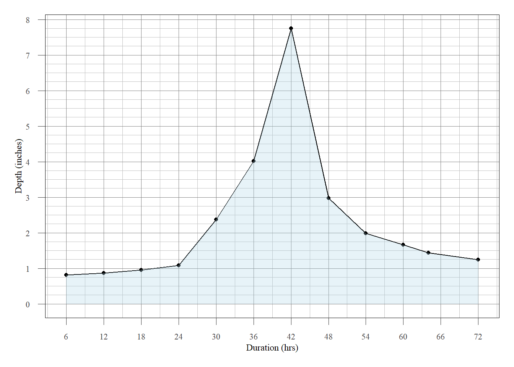

library(tidyverse)
library(kableExtra)
library(knitr)
library(quarto)
source("E:/R/theme_USACE.r")HMR 36 Calculation
The procedures in Hydrometeorological Report No. 36 (MHR 36) were used to estimate the PMP for Lopez Dam. The calculation was done in R and is recreated in this section. The index maps in the HMR 36 PDF are small and corresponding GIS files could not be found at this time.
Section 9.02 - Determine Orographic PMP Development
The calculations in this section were conducted following the instructions laid out in HMR 36 - Section 9.02, steps in determining orographic PMP
- Determine average probable maximum precipitation index within basin out-line from figure 5-35 (grid average is adequate).
pmpindex <- 3- Determine the basin representative width perpendicular to the optimum in-flow direction. This is measured perpendicular to the sides of the orographic PMP computation areas shown on figure 5-30. (Narrow extensions of the basin perpendicular to the inflow would not be considered in determining the basin representative width)
repwidth <- 14.15- Determine basin-width adjustment factor from figure 5-39.
width_adj <- 1.0- Multiply the basin average probable maximum orographic precipitation in-dex from step 1, by the basin-width adjustment factor. This will give the January 6-hour maximum orographic PMP.
jan_6hr_oro <- pmpindex * width_adj- To obtain all 6-hourly increments of orographic PMP for each month use percentages given in table 5-5 (based on October 1969 Revision). If the basin is in the Sierra Range east of a line through the middle of Central Valley multiply the width-adjusted basin-average probable maximum orographic precipitation index from step 4 by the Sierra Range percentages.
oro_pmp <- data.frame(Duration.hrs = c(0,1,3,6,12,18,24,30,36,42,48,54,60,64,72),
Incre_Scale = c(0,20,54,100,77,61,50,42,35,30,25,21,18,15,13)/100)
#| echo: false
kable(oro_pmp,
caption = "Orographic PMP Percentages",
align = c("c", "c"),
col.names = c("Duration (hrs)", "Incremental %"))| Duration (hrs) | Incremental % |
|---|---|
| 0 | 0.00 |
| 1 | 0.20 |
| 3 | 0.54 |
| 6 | 1.00 |
| 12 | 0.77 |
| 18 | 0.61 |
| 24 | 0.50 |
| 30 | 0.42 |
| 36 | 0.35 |
| 42 | 0.30 |
| 48 | 0.25 |
| 54 | 0.21 |
| 60 | 0.18 |
| 64 | 0.15 |
| 72 | 0.13 |
For a basin in any other area, multiply the width-adjusted basin-average probable maximum orographic precipitation index from step 4 by the Coastal Range percentages (table 5-7).
table5_7 <- data.frame(Month = c("Oct","Nov","Dec","Jan-Feb","Mar","Apr"),Per = c(92,94,98,100,95,87)/100)
oro_pmp$Oct_P_in <- jan_6hr_oro * oro_pmp$Incre_Scale * table5_7$Per[table5_7$Month =="Oct"]
oro_pmp$Nov_P_in <- jan_6hr_oro * oro_pmp$Incre_Scale * table5_7$Per[table5_7$Month =="Nov"]
oro_pmp$Dec_P_in <- jan_6hr_oro * oro_pmp$Incre_Scale * table5_7$Per[table5_7$Month =="Dec"]
oro_pmp$Jan_P_in <- jan_6hr_oro * oro_pmp$Incre_Scale
oro_pmp$Mar_P_in <- jan_6hr_oro * oro_pmp$Incre_Scale * table5_7$Per[table5_7$Month =="Mar"]
oro_pmp$Apr_P_in <- jan_6hr_oro * oro_pmp$Incre_Scale * table5_7$Per[table5_7$Month =="Apr"]| Month | Percentage |
|---|---|
| Oct | 0.92 |
| Nov | 0.94 |
| Dec | 0.98 |
| Jan-Feb | 1.00 |
| Mar | 0.95 |
| Apr | 0.87 |
- For small basins, the 1- and 3-hour duration orographic PMP values are 20 and 54 percent respectively (see paragraph 5.50) of the lst (maximum) 6-hour orographic PMP (this was done above in “incre_Scale”). Accumulate orographic PMP Values
oro_pmp$Oct_P_cu <- cumsum(oro_pmp$Oct_P_in)
oro_pmp$Nov_P_cu <- cumsum(oro_pmp$Nov_P_in)
oro_pmp$Dec_P_cu <- cumsum(oro_pmp$Dec_P_in)
oro_pmp$Jan_P_cu <- cumsum(oro_pmp$Jan_P_in)
oro_pmp$Mar_P_cu <- cumsum(oro_pmp$Mar_P_in)
oro_pmp$Apr_P_cu <- cumsum(oro_pmp$Apr_P_in)Section 9.03 - Determine Convergence PMP
The calculations in this section were conducted following the instructions laid out in HMR 36 - Section 9.03, steps in determining restricted convergence PMP to be combined with orographic PMP.
- Determine average probable maximum convergence precipitation index withinbasin outline from figure 4-12 (grid average is adequate).
cpmpindex <- 3.8- Tabulate the 6-hour incremental percentages of convergence PMP index for the area of the basin for each month, October through April (figures 4-13a,b, and c). After the 3rd or 4th 6-hour increment, there is no areal variation so the percentages are given on the figures. For small basins, the 1- and 3-hour duration percentages are obtained from the same figures.
oct <- data.frame(Duration.hrs = c(0,1,3,6,12,18,24,30,36,42,48,54,60,64,72),
Incre_Scale = c(0,62,112,150,37,2,18,14,12,11,10,9,9,8,8)/100)
nov <- data.frame(Duration.hrs = c(0,1,3,6,12,18,24,30,36,42,48,54,60,64,72),
Incre_Scale = c(0,60,105,140,42,24,20,16,14,13,11,10,10,10,10)/100)
dec <- data.frame(Duration.hrs = c(0,1,3,6,12,18,24,30,36,42,48,54,60,64,72),
Incre_Scale = c(0,55,95,128,42,30,21,18,16,13,12,11,11,10,10)/100)
janfeb <- data.frame(Duration.hrs = c(0,1,3,6,12,18,24,30,36,42,48,54,60,64,72),
Incre_Scale = c(0,50,88,125,45,30,23,19,16,14,13,12,11,11,11)/100)
march <- data.frame(Duration.hrs = c(0,1,3,6,12,18,24,30,36,42,48,54,60,64,72),
Incre_Scale = c(0,57,90,125,57,30,23,19,16,13,11,10,10,9,9)/100)
april <- data.frame(Duration.hrs = c(0,1,3,6,12,18,24,30,36,42,48,54,60,64,72),
Incre_Scale = c(0,55,95,125,45,30,22,18,14,12,10,9,9,8,8)/100)- Multiply the basin-average probable maximum convergence precipitation index from step 1 by the percentages determined in step 2. The results are the 1- and 3-hour duration and 6-hourly incremental restricted convergence PMP values that are added to the orographic PMP month for month
oct$P_in <- cpmpindex * oct$Incre_Scale
nov$P_in <- cpmpindex * nov$Incre_Scale
dec$P_in <- cpmpindex * dec$Incre_Scale
janfeb$P_in <- cpmpindex * janfeb$Incre_Scale
march$P_in <- cpmpindex * march$Incre_Scale
april$P_in <- cpmpindex * april$Incre_ScaleAccumulate Convergence PMP Values
oct$P_cu <- cumsum(oct$P_in)
nov$P_cu <- cumsum(nov$P_in)
dec$P_cu <- cumsum(dec$P_in)
janfeb$P_cu <- cumsum(janfeb$P_in)
march$P_cu <- cumsum(march$P_in)
april$P_cu <- cumsum(april$P_in)Section 9.04 - Total PMP
This section calculates and the total probable maximum precipitation.
- Add the 6-hourly increments of orographic PMP from 9.02.5 to the 6-hourly increments of restricted convergence PMP from 9.03 A3 month for month; 1st 6-hour orographic to 1st 6-hour convergence, 2nd 6-hour orographic to 2nd 6-hour convergence, etc. For small basins also add the 1- and 3-hour duration orographic and convergence values.
oct$oro_P_in <- oro_pmp$Oct_P_in
oct$oro_P_cu <- oro_pmp$Oct_P_cu
nov$oro_P_in <- oro_pmp$Nov_P_in
nov$oro_P_cu <- oro_pmp$Nov_P_cu
dec$oro_P_in <- oro_pmp$Dec_P_in
dec$oro_P_cu <- oro_pmp$Dec_P_cu
janfeb$oro_P_in <- oro_pmp$Jan_P_in
janfeb$oro_P_cu <- oro_pmp$Jan_P_cu
march$oro_P_in <- oro_pmp$Mar_P_in
march$oro_P_cu <- oro_pmp$Mar_P_cu
april$oro_P_in <- oro_pmp$Apr_P_in
april$oro_P_cu <- oro_pmp$Apr_P_cu- Accumulate the 6-hourly incremental values of combined restricted convergence PMP and orographic PMP for each month to obtain the 6-, 12-, 18-,etc. hour duration values
oct$Total_PMP_in <- oct$P_in + oct$oro_P_in
nov$Total_PMP_in <- nov$P_in + nov$oro_P_in
dec$Total_PMP_in <- dec$P_in + dec$oro_P_in
janfeb$Total_PMP_in <- janfeb$P_in + janfeb$oro_P_in
march$Total_PMP_in <- march$P_in + march$oro_P_in
april$Total_PMP_in <- april$P_in + april$oro_P_in
# Accumulate
oct$Total_PMP_cu <- cumsum(oct$Total_PMP_in)
nov$Total_PMP_cu <- cumsum(nov$Total_PMP_in)
dec$Total_PMP_cu <- cumsum(dec$Total_PMP_in)
janfeb$Total_PMP_cu <- cumsum(janfeb$Total_PMP_in)
march$Total_PMP_cu <- cumsum(march$Total_PMP_in)
april$Total_PMP_cu <- cumsum(april$Total_PMP_in)- For pronounced orographic areas the combined orographic and restricted convergence PMP will exceed the unrestricted convergence PMP month for month.For basins in non-orographic regions, the unrestricted convergence is the total PMP. For foothill areas, the combined orographic and restricted convergence PMP (9.04.2) and unrestricted convergence PMP (9.03 B2) may be com-pared and the most critical selected dependent upon critical duration and other hydrologic factors. For any basin the PMP values for the variousmonths should be evaluated on the basis of snowmelt contribution, (ref.chapter X for snowmelt winds and temperatures) size of basin, etc. in order to select the most hydrologically critical precipitation.
months <- c("Oct","Nov","Dec","Jan&Feb","March","April")
dur24 <- c(
oct$Total_PMP_in[which(oct$Duration.hrs == 24)],
nov$Total_PMP_in[which(nov$Duration.hrs == 24)],
dec$Total_PMP_in[which(dec$Duration.hrs == 24)],
janfeb$Total_PMP_in[which(janfeb$Duration.hrs == 24)],
march$Total_PMP_in[which(march$Duration.hrs == 24)],
april$Total_PMP_in[which(april$Duration.hrs == 24)])
dur48 <- c(
oct$Total_PMP_in[which(oct$Duration.hrs == 48)],
nov$Total_PMP_in[which(nov$Duration.hrs == 48)],
dec$Total_PMP_in[which(dec$Duration.hrs == 48)],
janfeb$Total_PMP_in[which(janfeb$Duration.hrs == 48)],
march$Total_PMP_in[which(march$Duration.hrs == 48)],
april$Total_PMP_in[which(april$Duration.hrs == 48)])
dur72 <- c(
oct$Total_PMP_in[which(oct$Duration.hrs == 72)],
nov$Total_PMP_in[which(nov$Duration.hrs == 72)],
dec$Total_PMP_in[which(dec$Duration.hrs == 72)],
janfeb$Total_PMP_in[which(janfeb$Duration.hrs == 72)],
march$Total_PMP_in[which(march$Duration.hrs == 72)],
april$Total_PMP_in[which(april$Duration.hrs == 72)])
monthlypmps <- data.frame(Months = months,Dur24=dur24,Dur48=dur48,Dur72=dur72)Months corresponding to maximum PMP
[1] "Max 24 hour month is: Jan&Feb"[1] "Max 48 hour month is: Jan&Feb"[1] "Max 72 hour month is: Jan&Feb"Create dataframe of HMR 36 PMP results
hmr36 <- janfeb
colnames(hmr36) <-c("Duration.hrs","Incre_scale","Con_PMP_in","Con_PMP_cu","Oro_PMP_in","Oro_PMP_cu","Total_PMP_in","Total_PMP_cu")
hmr36 <- hmr36 %>% select(c(Duration.hrs,Total_PMP_in,Total_PMP_cu))Section 9.05 - Time Distribution
Also see Chapter VII - section 7.10. Group the four heaviest 6-hour increments of the 72 hour PMP in a 24-hour sequence. Group the middle four increments in a 24-hour sequence. Group the smallest four increments in a 24-hr sequence.
Within each of the three 24-hr sequences, arrange the four increments in the following sequential requirement: the second highest increment is next to the highest. The third highest increment is adjacent to those. The fourth highest increment is at either end of the previously grouped sequence. Any of the possible combinations to the three 24-hour periods is acceptable with the exception of placing the lightest 24-hour period in the middle.
hmr36_temporal <- hmr36 %>% filter(Duration.hrs >= 6)
hmr36_temporal$PMP_Rank <- (length(hmr36_temporal$Duration.hrs) + 1) - rank(hmr36_temporal$Total_PMP_in)
hmr36_temporal$Groups_24hr <- ifelse(hmr36_temporal$PMP_Rank <= 4,1,3)
hmr36_temporal$Groups_24hr <- ifelse(hmr36_temporal$PMP_Rank <=9 & hmr36_temporal$PMP_Rank >= 4,2,hmr36_temporal$Groups_24hr)Based on the middle-left example on Figure 7-3 (Page 187)
rank_order <- c(12,11,10,9,4,2,1,3,5,6,7,8)
hmr36_temporal$Hyetograph <- hmr36_temporal$Total_PMP_in[rank_order]The resulting hyetograph is shown in Figure 1
